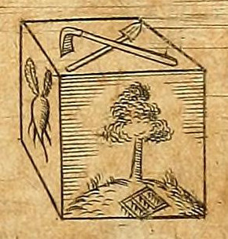
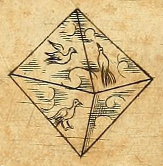
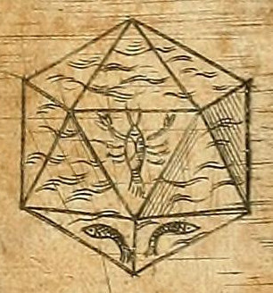
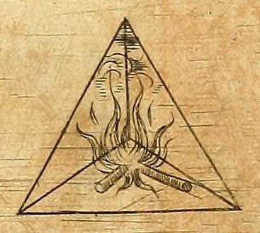
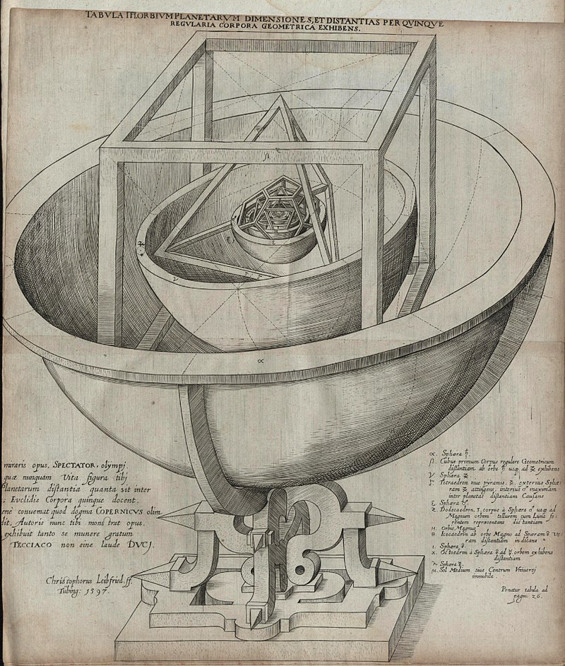

Welcome to the Wonderful world of Dice
Dice can be some of the most entertaining objects in the world, as boring as they might seem at first.
Their versatility is next to none, as they can be used for a million different games or activities.
As you can tell, I'm quite a big fan of these little objects, and I find there are few things more satisfying than rolling dice.
In this website, you will be able to explore many kinds of dice and the geometry behind them.
Use the sidebar to navigate over the different platonic solids, if you click on the webpage, you will make the dice roll.
Finally, this website is all done in 3D so if you want, you can use your mouse to navigate around 3D space
A little bit of history:
Dice are extremely old objects, it is estimated that they have existed since before the beginning of recorded history.
A fact that is surprising given the interesting geometric and mathematical properties of these objects.
We have even found a 20 sided die from ptolemaic egypt, they are referenced in the Bible and show up in many different cultures accross the world.
As we will see a bit later, dice are most commonly platonic solids, fascinating geometric shapes that have been known since ancient greece.
Some say it was Pythagoras that discovered these shapes, others attribute their discovery to Theaetetus.
However we associate them strongly with Plato and hence the name Platonic Solids, quite interestingly, Plato decided to associate one of these solids to each of the four elements:
Earth ↦ Cube
Air ↦ Octahedron
Water ↦ Icosahedron
Fire ↦ Tetrahedron
Notice however that there is one solid that has no attributed element, since there are only 4 elements.
Later on, Aristotle would invent a new element : the Aether
But he didn't care much to associate it to any particular solid, it would only be until Keppler that we would get a full association of these solids to the elements.
   
Fun fact: Keppler thought that these solids were part of the elemental structure of the universe and associated them to his model, here is an image

Some mathematics:
All the dice I showcase in this website (which are the most commonly used dice) are the 5 platonic solids, special mathematical objects with interesting properties that make them perfect for the randomness we associate to dice.
So what exactly is a Platonic Solid ?
To be a platonic solid, a shape must respect a few rules:
- It must: have faces identical in size
- It must: have identical angles and edges
- It must: have the same number of faces meet at each vertex
A Platonic solid is a convex, regular polyhedron in three-dimensional Euclidean space. Being a regular polyhedron means that the faces are congruent (identical in shape and size) regular polygons (all angles congruent and all edges congruent), and the same number of faces meet at each vertex.
It turns out that there can only exist 5 shapes that respect these properties and when we stop and think about it, these properties are perfect for making a balanced die, forcibly introducing symmetry to the shape.
And so these are the dice I have decided to showcase, the 5 platonic solids in 3D space.